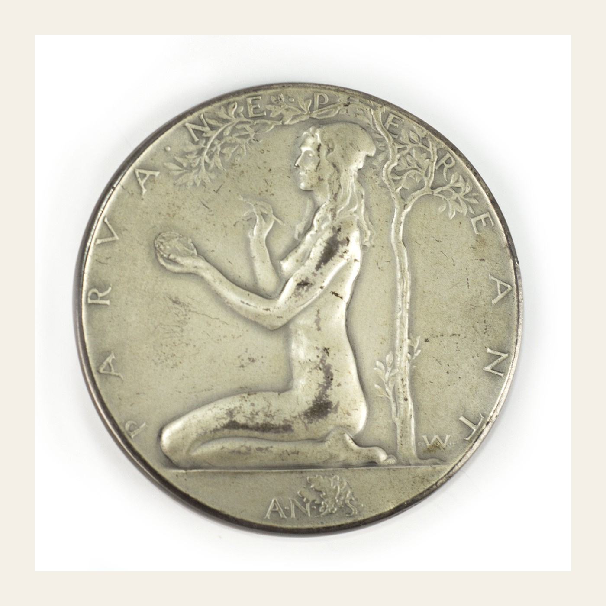
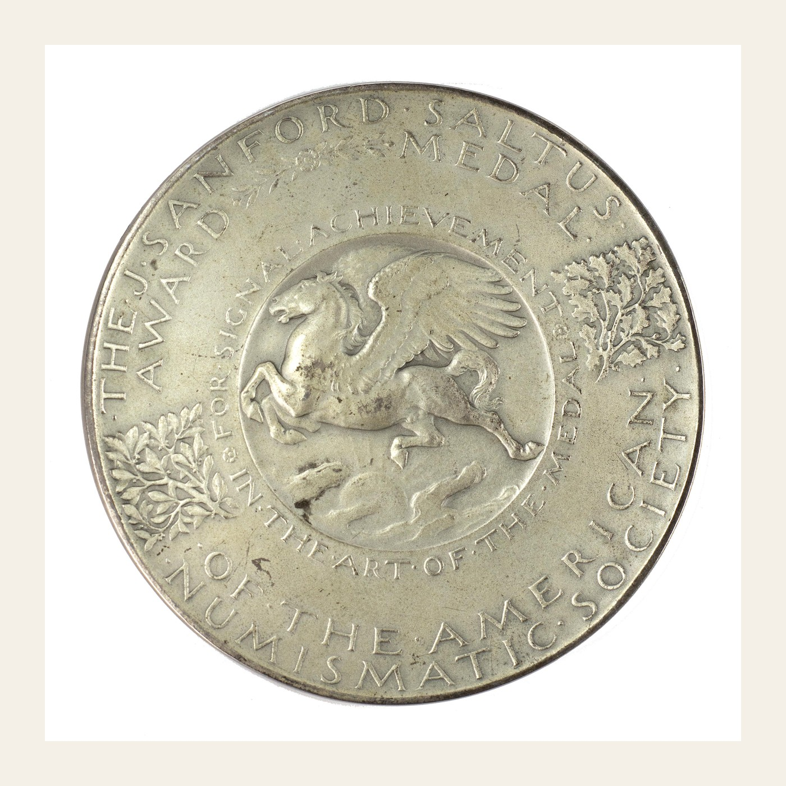
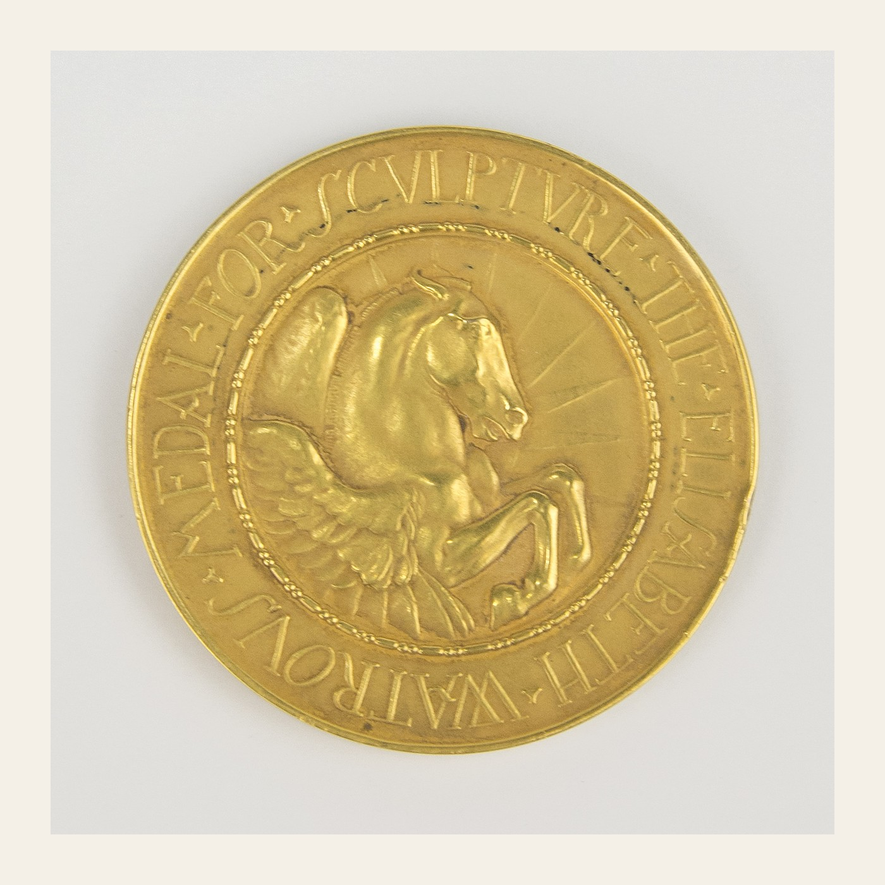
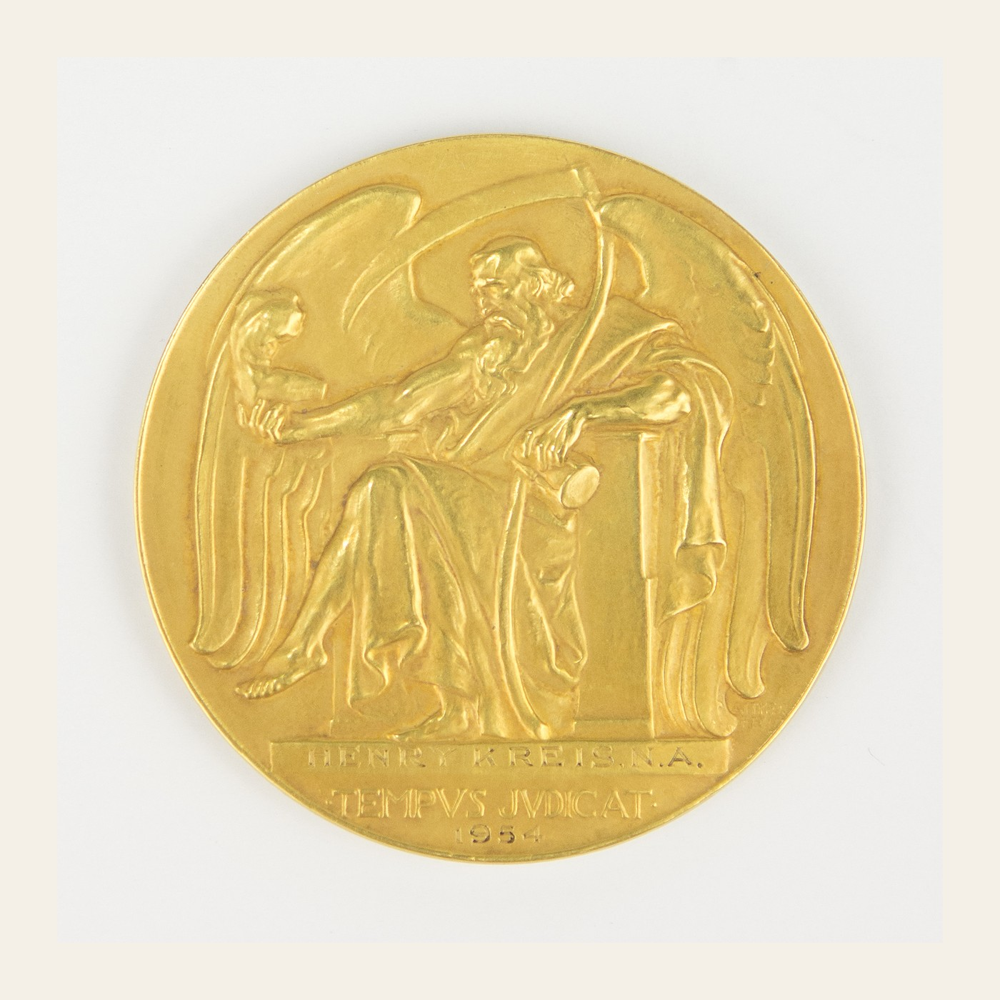

Henry Kreis was a German-born American sculptor whose work ranged from intimate figures carved in stone to monumental public commissions, architectural reliefs, coins, and medals. Trained first as a craftsman, he carried a lifelong respect for materials and direct carving into a career that joined traditional skill with the demands of modern American public art.
Early life and training
Kreis was born in Essen, Germany, on July 27, 1899, the fourth of ten children. His father was an architect who managed work for a building contractor. In a first-person account published in 1938, Kreis remembered that his father kept the children occupied with rolls of leftover wallpaper and pencils. A perceptive drawing teacher later recognized his ability to draw and model and helped him secure an apprenticeship with a stone carver.
The apprenticeship was demanding. Kreis learned carving while also unloading stone, digging monument foundations, and performing the routine labor of a commercial shop. Although he sometimes felt exploited, he later regarded this training as the source of his independence and confidence. It taught him that sculpture began not only with an idea, but with disciplined work and an intimate knowledge of tools and materials.
His apprenticeship was interrupted in June 1917 when he was drafted into the German army. He served with heavy artillery in Flanders and experienced the violence of the war at close range. After returning, he completed his apprenticeship and studied for approximately three years at the state art school in Munich under sculptor Joseph Wackerle. The school's workshop model exposed him to wood and stone carving, terra cotta, bronze casting, metalwork, medals, and architectural commissions.
Coming to America
In 1923, amid Germany's political and economic instability, Kreis immigrated to the United States with little money and a trade he could rely upon. He first set tombstones, worked briefly as a stone cutter in Buffalo, and found employment as a carver while attending the Beaux-Arts Institute of Design in New York in the evenings.
Commercial carving provided work during the building boom of the 1920s, but repetitive architectural ornament did not satisfy him. He went to Florida to work on a project directed by designer and architect Joseph Urban, soon becoming foreman of a group of carvers. Urban then commissioned him to create eight heroic figures for the International Magazine Building near Columbus Circle in New York. The work helped bring Kreis to the attention of C. Paul Jennewein and Paul Manship, for whom he worked as an assistant for roughly the next five years.
These years gave Kreis practical experience with large studios, architectural programs, and public commissions. In 1933, while working in Jennewein's orbit, he executed twelve bas-reliefs representing regions and industries of the United States for the Department of Justice Building in Washington, D.C.
An independent sculptor
Around 1933, Kreis bought an old farm in Connecticut and began concentrating more fully on sculpture of his own. The move gave him the space and relative economy to work between commissions, carving figures in stone and experimenting with wood and terra cotta.
He kept small pieces of clay and stone close at hand. Quick terra-cotta or wax studies allowed him to preserve an idea, set it aside, and decide later whether it deserved to become a larger work. When carving, he preferred to respond directly to the character of the stone rather than mechanically reproduce a finished plaster model. Materials, technique, planes, textures, and curves mattered deeply to him, but he believed they remained means of communicating emotion rather than ends in themselves.
Federal art programs of the 1930s helped establish Kreis as an independent public sculptor. He won a national Treasury competition for The Letter, a monumental relief for the Bronx Post Office showing a mother and child receiving news from an absent family member. He also created two large groups for a housing project in Stamford, Connecticut, including Mother and Son.
At the same time, Kreis continued making sculpture on a more personal scale. His brownstone figure Indian Summer, created in 1937, entered the collection of the Metropolitan Museum of Art in 1942. Works such as In Pensive Mood, Reclining Half Nude, Karen, and Descent from Calvary reveal the quieter, reflective side of an artist also capable of working at architectural scale.
Public works and teaching
Kreis's public sculpture appeared across the United States and abroad. The Birth of a Nation, completed in 1942 for the Ellen Phillips Samuel Memorial in Philadelphia's Fairmount Park, combines monumental allegory with a dense limestone composition. Other commissions included reliefs for federal buildings in Washington, sculpture for the War Department, work for a federal courthouse in Erie, Pennsylvania, a war memorial at Virginia Polytechnic Institute, and two large reliefs representing law and justice for the Brooklyn Supreme Court Building.
For the North Africa American Cemetery and Memorial near Carthage, Tunisia, Kreis created Honor, a monumental stone figure associated with the memory of American service members who died in the region during World War II. The subject joined his command of architectural sculpture with the restrained gravity found throughout his work.
Kreis also taught at the Hartford Art School for more than a decade. His own writing suggests what he offered his students: respect for craftsmanship, patience with materials, and the conviction that technical skill should serve meaning. His influence therefore extended beyond the works bearing his name to the artists who learned in his studio and classroom.
Coins and medals
Although known primarily as a sculptor, Kreis became one of the notable American medalists of his generation. The concentrated scale of coins and medals suited his interest in relief, symbolism, and the expressive possibilities of carefully modeled surfaces.
He designed the Connecticut Tercentenary half dollar of 1935 and the Bridgeport Centennial half dollar of 1936, whose portrait of P. T. Barnum and unusually stylized eagle made it one of the most distinctive American commemorative coins of its period. He also designed the Joseph T. Robinson portrait obverse for the Arkansas-Robinson commemorative half dollar and the official medal or token of the 1939 New York World's Fair.
In 1940, Kreis won the National Sculpture Society's competition for a new Medal of Honor. The design was subsequently used for a medal presented to sculptor Anna Hyatt Huntington. His 1947 Society of Medalists issue, commonly known as Wise and Foolish Virgins, translated a biblical parable into paired relief compositions.
In 1948, the American Numismatic Society selected Kreis as the twelfth recipient of its J. Sanford Saltus Award Medal “in recognition of distinguished achievement in the art of the medal.” The selection followed the National Sculpture Society's 1948 exhibition. Kreis formally received the medal at the Society's meeting on January 15, 1949, where examples of his medals and commemorative-coin models were displayed.


Medal photographs from the Kreis family collection.
Recognition and legacy
In 1943, the Pennsylvania Academy of the Fine Arts awarded Kreis the George D. Widener Memorial Gold Medal for The Birth of a Nation. The monumental limestone relief had been completed in 1942 for the Ellen Phillips Samuel Memorial in Philadelphia's Fairmount Park. PAFA's archival photographs identify the work as the medal recipient at its 138th Annual Exhibition.
Kreis received major recognition in both sculpture and medallic art. He was elected an Associate of the National Academy of Design in 1948 and a full Academician in 1951. The National Academy—not the National Sculpture Society—awarded him the Elizabeth N. Watrous Gold Medal twice: for his stone sculpture Descent from Calvary in 1951 and for Karen in 1954. The 1954 award also carried a $300 prize.
Robert Aitken designed the Watrous medal for the National Academy in 1914. Family records identify the photographed 1954 example as a Medallic Art Company strike measuring two inches and weighing 45.2 grams, with a 1/10 10K gold-filled finish. Its mintage is unknown.


Medal photographs from the Kreis family collection.
In 1960, Kreis shared in the first Henry Hering Memorial Medal awarded by the National Sculpture Society. The new award recognized outstanding collaboration among architect, owner, and sculptor. The ecclesiastical-category honor was presented on May 10 for the Loyola Seminary House of Studies in Shrub Oak, New York. Kreis was one of six sculptors honored for the project, together with Donald De Lue, Gleb Derujinsky, Joseph Kiselewski, Oronzio Maldarelli, and Carl L. Schmitz.
He was also associated with the National Institute of Arts and Letters.
Henry Kreis died in Essex, Connecticut, on January 22, 1963. His career resists a simple division between fine art and applied art. He was at once a stone carver, architectural sculptor, modeler, medalist, teacher, and designer of public symbols. Monumental commissions carried his work into civic spaces, while sculptures in museum collections and medals held in the hand reveal a more intimate scale.
Across those forms, the foundation remained the same: a craftsman's knowledge of material joined to a belief that form must carry human feeling. That union of workmanship and emotional purpose gives Kreis's sculpture its distinctive place in twentieth-century American art.